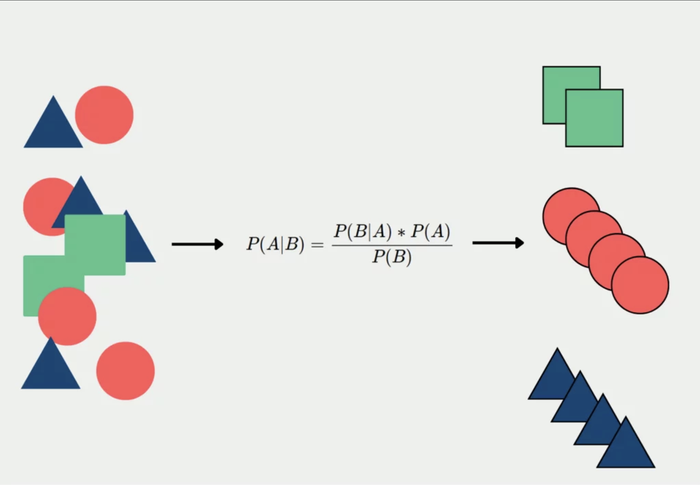
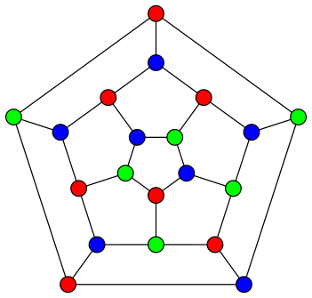

Air Quality Prediction in Monterrey
This project focuses on predicting air pollutant levels in Monterrey,
using Long Short-Term Memory (LSTM) neural networks. By analyzing historical data from 2022 to 2024 and incorporating
meteorological variables, temporal patterns, and feature engineering, the model aims to provide
reliable forecasts for pollutants like PM10, SO2, CO, and NOX. The goal is to support proactive
air quality management and mitigate health risks associated with pollution.
Naive Bayes Spam Detector

This project implements a Naive Bayes Classifier to detect spam emails by preprocessing text
(lowercasing, removing special characters and stop words, and stemming) and applying Bayes'
Theorem to evaluate the likelihood of spam based on word occurrences.
Algorithm for Graph Coloring Problem

This project is a Python implementation of a genetic algorithm to solve the Graph Coloring Problem which is a well-known NP-hard problem in computer science and mathematics.
Cleaning Housing Data in SQL

This project showcases the process of cleaning and preparing Nashville housing data for analysis.
In it I use SQLite3 and Python's pandas library to perform key data transformation tasks,
such as handling missing values, standardizing data formats, and optimizing the dataset for in-depth analysis.

Explore upcoming projects that I plan to develop and showcase here.
Stay tuned for updates and innovative ideas that will soon be added to this website.